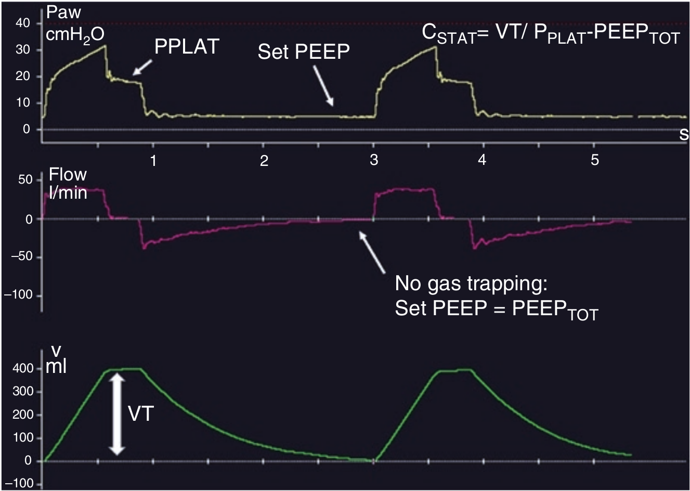

کمپلیانس سیستم تنفس عبارت است از نسبت بین تغییر ناشی از تغییر فشار. الاستانس معکوس کمپلیانس است.
ERS = 1 / CRS
الاستانس سیستم تنفس برابر است با مجموع الاستانس ریه و فقسه صدری.

واحد کمپلیانس:
۱ - cmH2O/L
۲ - mL/cmH2O
۳ - hPa
۴ - L/min
۵ - cmH2O/L/sec